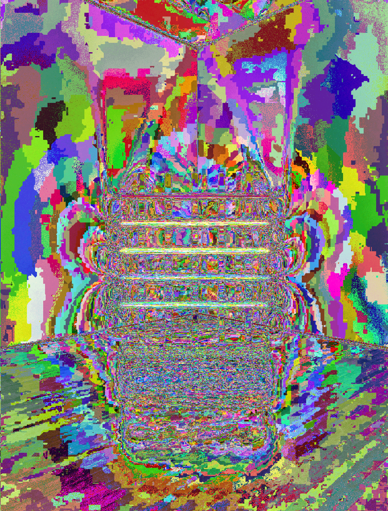
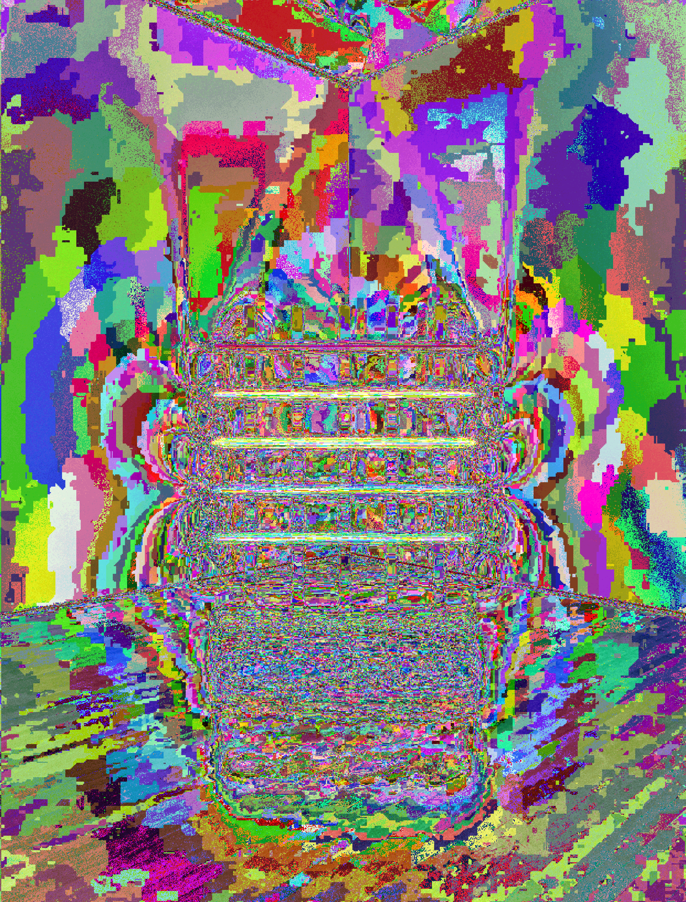

SOOVIN CHOI
｡･:*:･ﾟ★,｡･:*:･ﾟ☆
GLITCH EXPLORATION
｡･:*:･ﾟ★,｡･:*:･ﾟ☆
GLITCH EXPLORATION
｡･:*:･ﾟ★,｡･:*:･ﾟ☆
Love when I cannot control.
 


1.Professor Kiki Wu taught students with Airdrop glitch process,
and I loved how things are mysteriously processed while Aridropping it.
2. (video) Used Touch Designer to explore pixel sorting effect. It works randomly,
it feels like glitch effect.
3.(gif) The gif glitch work by using Audacity program.
Then, I added some Holloween theme png files on, since my first glitch expereince
felt like the ghost's work.
Go
ba
ck